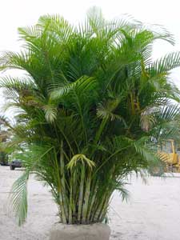
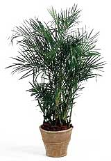
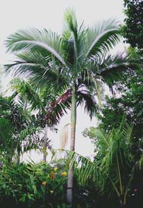
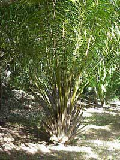

Las arecáceas (nombre científico Arecaceae, sinónimo Palmae), son una familia de plantas monocotiledóneas, la única familia del orden Arecales (sinónimo Principales). Normalmente se las conoce como palmeras o palmas. Los individuos de esta importante familia son fáciles de reconocer visualmente, aunque puede haber confusión con especies de las familias Cycadaceae y Zamiaceae debido a las similitudes morfológicas. Son plantas leñosas (pero sin crecimiento secundario del tronco, solo primario). A pesar de ser monocotiledóneas muchas de ellas son arborescentes, con grandes hojas en corona al final del tallo, generalmente pinnadas (pinnatisectas) o palmadas (palmatisectas). Sus flores poseen 3 sépalos y 3 pétalos, y se disponen en inflorescencias provistas de una o varias espatas. El fruto es carnoso: una baya o una drupa. Están ampliamente distribuidas en regiones tropicales a templadas, pero principalmente en regiones cálidas.
Cuidados del las Palmeras
Igual que sucede con muchas plantas en el jardín, las palmeras suelen adaptarse mejor en exteriores que en interiores. Claro está, siempre y cuando las plantemos en el terreno correcto y bajo el tipo de luz indicada.
Luz:
Las palmeras son plantas tropicales y subtropicales, entonces necesitan buena luz y climas cálidos para crecer saludables. Existen algunos tipos de palmera que hasta pueden vivir bien en interiores, pero la mayoría disfruta del pleno sol. Así que lo primero que debes hacer es averiguar el tipo de luz y temperatura que existe en el lugar donde te gustaría colocarla. De esta forma podrás parear el tipo de palmera con el tipo de luz que puedes proveerle.
Riegos:
La mayoría de las personas piensan que porque se trata de palmeras estas no necesitan riegos. Pero la verdad es que las palmeras también necesitan agua, sobre todo al principio de su desarrollo. Una vez establecidas en el terreno se pueden regar solo una vez por semana y hasta mucho menos. También es bien importante que el terreno tenga buen drenaje. Igual que los excesos en riegos, los encharcamientos de agua son fatales para estas plantas.
Terreno:
El terreno ideal para las palmeras debe mantener buen drenaje. Hay palmeras como las que producen cocos, que pueden vivir en terrenos salinos y bastante húmedos. Pero aún así el terreno debe mantener buen drenaje en las capas superiores, que es donde estas mantienen sus raíces. Los mejores terrenos para la mayoría de las palmeras suelen ser arenosos, sueltos y bien porosos. Pero igual pueden variar de acuerdo al tipo de palmera.
Mantenimiento general:
Las palmeras están entre las plantas más fáciles de mantener dentro o fuera de la casa. Ahora, eso no quiere decir que las podemos dejar en el abandono. Si vives en una zona tropical, posiblemente con mirarla sea suficiente para mantenerla en forma. Pero si vives en una zona templada, necesitarás darle un poco más de cariño.
Como regla general, asegúrate de plantar tu palmera en un lugar que se mantenga bastante soleado y cálido todo el año. También asegúrate de escoger una palmera que se adapte al clima donde vives. No podes tus palmeras, deja que las hojas se sequen en la misma planta hasta que salgan de un simple tirón.

Palma Areca

Palma Bambú

Palma Alejandra

Palma Africana
CONTACTOS
Vivero Florisanto
Telefonos: 3135058066 - 3126688884
Email:vivero-florisanto@hotmail.com
Dirección: Calle 29 # 38-70 Via Planeta Rica K2